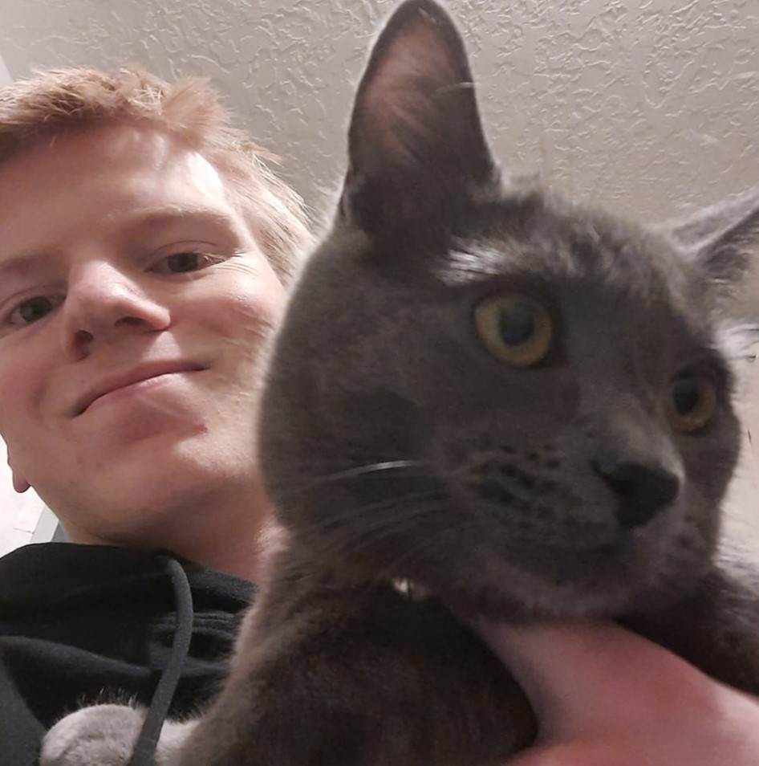

I'm Kryton, I'm a Computer Science major, and I plan to go into game design. I love playing video games and creating them is super fun. I also enjoy playing Tennis and Pickleball, I play the flute, and also like to draw occasionally.
I'm from California originally and did one semester of school before my mission in New Jersey. I've been a member of the church all my life, and I love Jeffrey R Holland's talk "An High Priest of Good Things to Come," in which he says
"'Don’t give up, boy. Don’t you quit. You keep walking. You keep trying. There is help and happiness ahead—a lot of it—30 years of it now, and still counting. You keep your chin up. It will be all right in the end. Trust God and believe in good things to come.'"